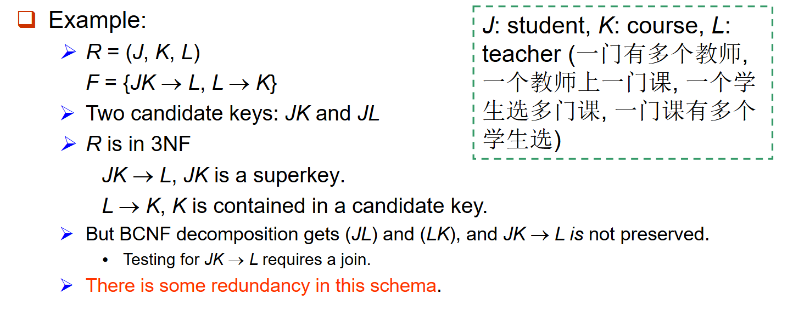
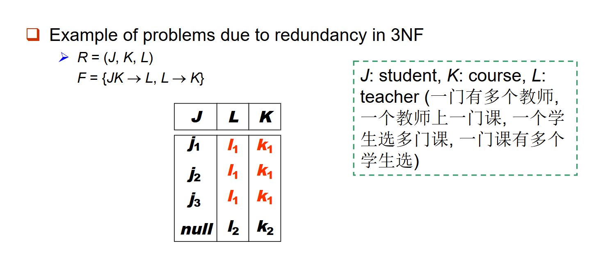
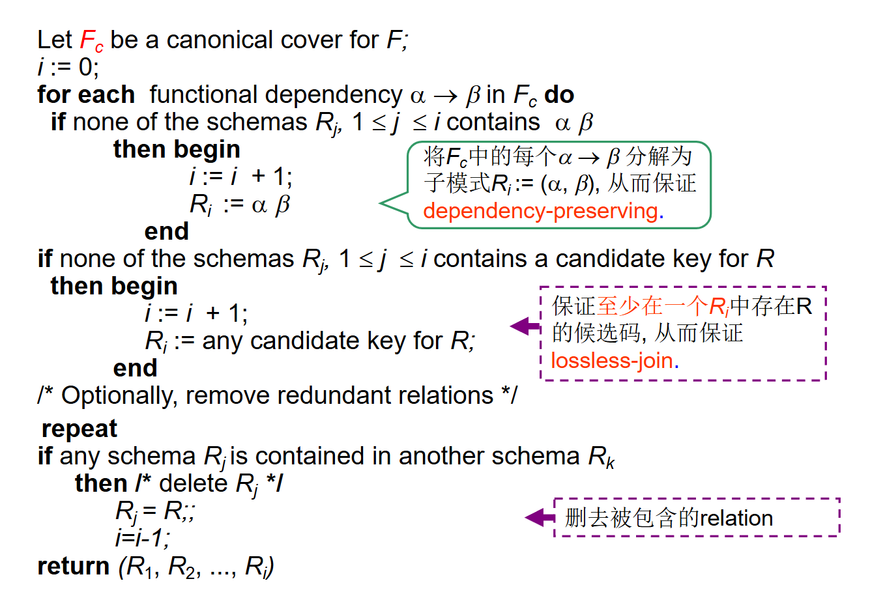
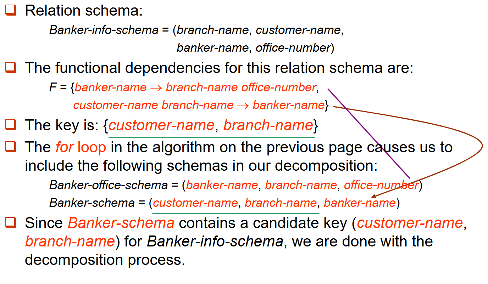
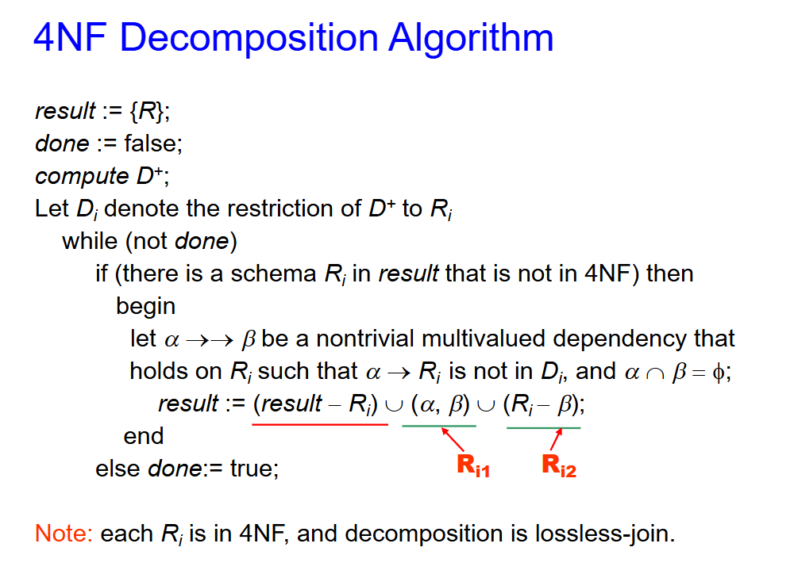

关系型数据库设计¶
关系数据库设计的目的是生成一组关系模式，在存储信息时避免不必要的冗余，且能够方便地检索信息。
这可以通过设计符合适当范式的关系模式来实现。
不良设计可能导致：冗余存储，插入/删除/更新异常等问题。
分解¶
分解：将一个关系模式分解为多个关系模式。
例如将 (ABCD) 替换为 (AB) 和 (BCD)，或者 (ACD) 和 (ABD)，或者 (ABC) 和 (CD)，或者 (AB)、(BC) 和 (CD)，或者 (AD) 和 (BCD)。
原始模式（R）中的所有属性必须出现在分解得到的模式（\(R_1, R_2\)）中，即 \(R = R_1 \cup R_2\)。
同时我们一般要求分解是无损连接分解（lossless-join decomposition），即对于模式\(R\)上的所有可能关系 \(r\)，
反过来，如果 \(r \subset \Pi_{R_1}(r) \bowtie \Pi_{R_2}(r)\)，则该分解是有损的。

第一范式（First Normal Form，1NF）¶
如果域的元素被视为不可分割的单元，则该域是原子的。
非原子域的例子：
- 复合属性——例如姓名集合
- 多值属性——例如一个人的电话号码
- 复杂数据类型——面向对象中的类型
如果关系模式 \(R\) 的所有属性的域都是原子的，则称 \(R\) 属于第一范式（1NF）。
对于关系数据库而言，要求所有关系都满足第一范式。
对于非原子的值，我们需要进行进一步处理：
- 对于复合属性：使用多个属性来表示。
- 对于多值属性：
- 使用多字段，例如
person(pname, ..., phon1, phon2, phon3, ...)； - 使用单独的表，例如
phone(pname, phone)； - 使用单个字段，例如
person(pname, ..., phones, ...)
- 使用多字段，例如
函数依赖¶
设 \(R\) 为一个关系模式，\(\alpha\) 和 \(\beta\) 为属性集，即 \(\alpha \subseteq R\) 且 \(\beta \subseteq R\)。
函数依赖 \(\alpha \to \beta\) 在 \(R\) 上成立，当且仅当对于任意合法关系 \(r(R)\)，只要 \(r\) 中的任意两个元组 \(t_1\) 和 \(t_2\) 在属性 \(\alpha\) 上取值相同，它们在属性 \(\beta\) 上也必然取值相同，即
\(\beta\) 函数依赖于 \(\alpha\)，\(\alpha\) 函数决定 \(\beta\)。
函数依赖是一种完整性约束，表达了特定属性上取值之间的关系，可用于判断模式的规范化程度并指导优化。
函数依赖是键概念的一种推广。
- \(K\) 是关系模式 \(R\) 的超键当且仅当 \(K \to R\)。
- \(K\) 是 \(R\) 的候选键当且仅当：\(K \to R\)，且不存在 \(K\) 的真子集 \(\alpha\) 使得 \(\alpha \to R\)（即不存在 \(\alpha \subset K, \alpha \to R\)）
我们使用函数依赖来：
- (1) 测试关系在给定的函数依赖集\(F\)下是否为合法的。（如果关系 \(r\)在函数依赖集 \(F\) 下是合法的，则称 \(r\) 满足 \(F\)。）

- (2) 在一组合法关系上指定约束 —— 即模式。（如果关系模式 \(R\) 上的所有合法关系\(r\) 都满足函数依赖集 \(F\)，则称 \(F\)在 \(R\) 上成立（即 \(F\) holds on \(R\)））

平凡函数依赖¶
如果一个函数依赖在所有关系上都成立，则称它是平凡的。例如：\(A \to A\)，\(AB \to A\)
一般来说，若 \(\beta \subseteq \alpha\)，则 \(\alpha \to \beta\) 是平凡的；否则是非平凡的，即：
- 平凡依赖：\(\alpha \to \beta\)，如果 \(\beta \subseteq \alpha\)
- 非平凡依赖：\(\alpha \to \beta\)，如果 \(\beta \not\subseteq \alpha\)
函数依赖闭包¶
给定一个函数依赖集 \(F\)，存在某些其他函数依赖被 \(F\) 逻辑蕴含。
例如：若 \(F = \{A \to B, B \to C\}\)，则根据 \(F\) 可推出 \(A \to C\)：\(A \to C\) 被 \(F\) 所逻辑蕴含，即 \(F\) 逻辑蕴含 \(A \to C\)。
定义：被 \(F\) 逻辑蕴含的所有函数依赖的集合称为 \(F\) 的闭包，记为 \(F^+\)（函数依赖集 \(F\) 的闭包）
例如：\(F = \{A \to B, B \to C\}\)，则 \(F^+ = \{A \to B,\; B \to C,\; A \to C,\; A \to A,\; AB \to A,\; AB \to B,\; AC \to C,\; A \to BC,\; \dots\}\)。
Armstrong 公理提供了求 \(F^+\) 的推理规则。
我们可以通过应用 Armstrong 公理来找出 \(F^+\) 中的所有函数依赖：
-
若 \(\beta \subseteq \alpha\)，则 \(\alpha \to \beta\)（自反律）—— 平凡依赖
-
若 \(\alpha \to \beta\)，则 \(\gamma \alpha \to \gamma \beta\)，\(\gamma \alpha \to \beta\)（增补律）
-
若 \(\alpha \to \beta\) 且 \(\beta \to \gamma\)，则 \(\alpha \to \gamma\)（传递律）
这些规则具有： - 保真性（Sound）：只生成实际成立的函数依赖 - 完备性（Complete）：能生成所有成立的函数依赖
我们可以使用以下附加规则进一步简化 \(F^+\) 的手工计算。
- 若 \(\alpha \to \beta\) 且 \(\alpha \to \gamma\) 成立，则 \(\alpha \to \beta\gamma\) 成立（合并律）
- 若 \(\alpha \to \beta\gamma\) 成立，则 \(\alpha \to \beta\) 和 \(\alpha \to \gamma\) 成立（分解律）
- 若 \(\alpha \to \beta\) 且 \(\gamma\beta \to \delta\) 成立，则 \(\alpha\gamma \to \delta\) 成立（伪传递律）
计算 \(F^+\) 的过程如下：
重复执行：
- 对于 \(F^+\) 中的每一个函数依赖 \(f\)
- 对 \(f\) 应用自反律和增补律
- 将得到的函数依赖添加到 \(F^+\) 中
- 对于 \(F^+\) 中的每一对函数依赖 \(f_1\) 和 \(f_2\)
- 如果 \(f_1\) 和 \(f_2\) 可以通过传递律组合
- 则将得到的函数依赖添加到 \(F^+\) 中
- 直到 \(F^+\) 不再发生变化
注意：对于 \(n\) 个属性，可能的函数依赖的最大数量为 \(2^n \times 2^n\)。
属性集的闭包¶
如何测试 \(\alpha\) 是否为超键？
- 方法一：首先求出 \(F^+\)，然后对于 \(F^+\) 中的所有 \(\alpha \to \beta_i\)，检查 \(\{ \beta_1, \beta_2, \beta_3, \dots \}\) 是否等于 \(R\)？但这样计算 \(F^+\) 并不容易。
- 方法二：求 \(\alpha\) 的闭包。
定义：给定属性集 \(\alpha\)，在 \(F\) 下 \(\alpha\) 的闭包记为 \(\alpha^+\)，它是在 \(F\) 下由 \(\alpha\) 所直接和间接函数决定的属性的集合。
要测试 \(\alpha \to \beta\) 是否属于 \(F^+\)，只需检查 \(\beta \subseteq \alpha^+\)。
要测试 \(\alpha\) 是否为超键，只需检查：\(\alpha \to R\) 是否属于 \(F^+ \iff R \subseteq \alpha^+\)

以下是一个通过属性集闭包判断超键的例子：


属性集闭包算法有三种用途：
-
测试超键 —— \((\alpha \to R?)\)
- 要测试 \(\alpha\) 是否为超键，我们计算 \(\alpha^+\)，然后检查 \(\alpha^+\) 是否包含 \(R\) 中的所有属性，即检查 \(R \subseteq \alpha^+\) 是否成立。
-
测试函数依赖 —— \((\alpha \to \beta?)\)
- 要检查函数依赖 \(\alpha \to \beta\) 是否成立（或者说是否属于 \(F^+\)），只需检查 \(\beta \subseteq \alpha^+\) 是否成立。
-
计算 \(F\) 的闭包 —— \((F^+ = ?)\)
- 对于每个 \(\gamma \subseteq R\)，我们求出其闭包 \(\gamma^+\)，然后对于每个 \(S \subseteq \gamma^+\)，输出一个函数依赖 \(\gamma \to S\)，所有这些 \(\gamma \to S\) 就构成了 \(F^+\)。
正则覆盖（Canonical Cover）¶
数据库管理系统应始终进行检查，以确保不违反 \(F\) 中的任何函数依赖。如果 \(F\) 过大，检查成本会很高。因此，我们需要简化函数依赖集。
直观上讲，\(F\) 的正则覆盖（记为 \(F_c\)）是一个与 \(F\) 等价且“最小”的函数依赖集。
它没有冗余的函数依赖，也没有依赖中的冗余部分，即 \(F_c\) 中的任何函数依赖都不包含无关属性。
如果 \(F\) 中某个函数依赖的一个属性可以被移除而不改变 \(F^+\)，则该属性是无关的（extraneous）。
无关属性共有三种情况：
(1) 函数依赖集中可能存在冗余的依赖，这些依赖可以从其他依赖中推导出来。

(2) 函数依赖左侧的某些部分可能是冗余的——即无关属性。

(3) 函数依赖右侧的某些部分可能是冗余的。

后两种情况的判断比较麻烦，以下是具体讨论：
要消去现有函数依赖 \(\alpha \to \beta\) 中的 extraneous（无关的、多余的）属性，无非有 2 种情况：
-
(1) Extraneous 属性在左边（即 \(\alpha\) 中，\(\alpha = A\alpha', A\alpha' \to \beta\)），
-
(2) Extraneous 属性在右边（即 \(\beta\) 中，\(\beta = A\beta', A\beta' \to \beta\)）。
对于情况(1)，\(A\alpha' \to \beta\)：如果 \(\alpha' \to \beta\) 已经由原来的函数依赖集 \(F\) 所蕴涵（即 \(F\) 中已经包含了 \(\alpha' \to \beta\)，或 \(F\) 可以推出 \(\alpha' \to \beta\)），则根据 Armstrong 公理，\(\alpha' \to \beta\) 可以推出 \(A\alpha' \to \beta\)，因此 \(A\alpha' \to \beta\) 是多余的（replace \(A\alpha' \to \beta\) with \(\alpha' \to \beta\)），也即 \(A\) 是多余的属性。也就是说，如果 \(F\) 蕴涵 \(F'\)，则左属性 \(A\) 可删除，只要保留剩余部分就可以了。
对于情况（2），\(\alpha \to A\beta'\)，等价于 \(\{\alpha \to \beta', \alpha \to A\}\)，如果 \(\alpha \to A\) 可以由其余的函数依赖所蕴涵，则说明 \(\alpha \to A\) 多余，即 \(\alpha \to A\beta'\) 中的 \(A\) 多余，只要保留 \(\alpha \to \beta'\) 就可以了。换句话说，如果我们把 \(F\) 中去掉 \(\alpha \to A\) 之后余下的部分叫 \(F'\)，即 \(F' = (F - \{\alpha \to \beta\}) \cup \{\alpha \to (\beta - A)\}\)，则如果 \(F'\) 可以推出 \(\alpha \to A\)，这说明 \(\alpha \to A\) 多余，只要保留 \(F'\) 就可以了。也就是说，如果 \(F'\) 蕴涵 \(F\)，则右属性 \(A\) 可删除。
那我们就可以得出得到一个函数依赖集的正则覆盖的过程：
- 使用合并律将 \(F\) 中形如 \(\alpha_1 \to \beta_1\) 和 \(\alpha_1 \to \beta_2\) 的依赖替换为 \(\alpha_1 \to \beta_1\beta_2\)
- 找出一个含有无关属性的函数依赖 \(\alpha \to \beta\)（无关属性可在 \(\alpha\) 或 \(\beta\) 中）
- 如果找到无关属性，则将其从 \(\alpha \to \beta\) 中删除，直到 \(F\) 不再变化
- 注意：删除某些无关属性后，合并律可能再次适用，因此需要重新应用合并律。
以下是一个例子：

无损连接分解¶
将 \(R\) 分解为 \(R_1\) 和 \(R_2\) 是无损连接分解，当且仅当 \(F^+\) 中至少包含以下依赖之一：
\(\{R_1 \cap R_2\} \to R_1\) 或 \(\{R_1 \cap R_2\} \to R_2\)
即分解后的两个子模式的共同属性必须是 \(R_1\) 或 \(R_2\) 的码（适用于一分为二的分解）。
如果分解后两个子模式没有共同属性，则肯定为有损连接分解。


依赖保持¶
设 \(F\) 是模式 \(R\) 上的依赖集；设 \(R_1, R_2, \dots, R_n\) 是 \(R\) 的一个分解。
\(F\) 在 \(R_i\) 上的限制是指 \(F^+\) 中所有仅包含\(R_i\) 中属性的函数依赖所构成的集合，记为 \(F_i\)。
注意，限制的定义使用的是\(F^+\) 中的所有依赖，而不仅仅是 \(F\) 中的依赖。
如果 \((F_1 \cup F_2 \cup \dots \cup F_n)^+ = F^+\)，则称该分解是依赖保持的。
要检查在将 \(R\) 分解为 \(R_1, R_2, \dots, R_n\) 后依赖 \(\alpha \to \beta\) 是否保持，可以使用以下简化测试：
- result = \(\alpha\)
- while (result 发生变化) do
- for each \(R_i\) in the decomposition
-
result = result \(\cup\) t
-
如果 result 包含 \(\beta\) 中的所有属性，则函数依赖 \(\alpha \to \beta\) 得到保持。
该过程的时间复杂度为多项式时间，而不是计算 \(F^+\) 和 \((F_1 \cup F_2 \cup \dots \cup F_n)^+\) 所需的指数时间。

Boyce-Codd 范式¶
定义：给定函数依赖集 \(F\)，关系模式 \(R\) 属于 BCNF，当且仅当对于 \(F^+\) 中所有形如 \(\alpha \to \beta\) 的函数依赖（其中 \(\alpha \subseteq R\)，\(\beta \subseteq R\)），至少满足以下条件之一：
-
\(\alpha \to \beta\) 是平凡的（即 \(\beta \subseteq \alpha\)）
-
\(\alpha\)是\(R\)的超键（即\(R \subseteq \alpha^+\)，且\(\alpha \subseteq R\)）
对所有 \(F^+\) 中的 \(\alpha \to \beta\) 均成立。

任意只有两个属性的关系模式都属于 BCNF。
要检查非平凡依赖 \(\alpha \to \beta\) 是否违反 BCNF：
-
计算 \(\alpha^+\)（\(\alpha\) 的属性闭包），然后
-
验证 \(\alpha^+\) 是否包含 \(R\) 的所有属性，即 \(\alpha\) 是否为 \(R\) 的超键。
要检查关系模式 \(R\) 是否属于 BCNF，只需检查给定依赖集 \(F\) 中的依赖是否违反 BCNF，而不必检查 \(F^+\) 中的所有依赖。
如果 \(F\) 中没有依赖导致违反 BCNF，那么 \(F^+\) 中也不会有任何依赖导致违反 BCNF。（\(F^+\)是由Armstrong的3个公理从\(F\)推出的, 而任何公理都不会使Functional Dependency (FD)左边变小(拆分), 故如果\(F\)中没有违反BCNF的FD (即左边是superkey), 则\(F^+\)中也不会. ）
然而，仅使用 \(F\) 来测试 BCNF 在检查分解后的关系 \(R_i\) 时可能不正确。（可在 \(F\) 下判别 \(R\) 是否违反 BCNF，但必须在 \(F^+\) 下判别 \(R\) 的分解式是否违反 BCNF。）
对于 \(R_i\) 中的每一个属性子集 \(\alpha\)，我们可以检查 \(\alpha^+\)（在 \(F\) 下 \(\alpha\) 的属性闭包）来测试BCNF，要么不包含 \(R_i - \alpha\) 中的任何属性，要么包含 \(R_i\) 的所有属性。
若一个关系模式 \(R\) 不是 BCNF，我们需要对它进行分解，直到它属于 BCNF。以下是分解的过程：

以下是一个分解的例子

我们并不总是能得到既满足 BCNF 又保持依赖的分解。如下例：

因此，我们无法总是同时满足以下三个设计目标：无损连接，依赖保持，BCNF。
第三范式¶
我们引入一种更弱的范式，称为第三范式（Third Normal Form，3NF）。
它允许一定程度的冗余，但总是存在一个无损连接且依赖保持的 3NF 分解。
定义：关系模式 \(R\) 属于第三范式（3NF），如果对于 \(F^+\) 中的所有 \(\alpha \to \beta\)，至少满足以下条件之一：
- \(\alpha \to \beta\) 是平凡的（即 \(\beta \subseteq \alpha\)）。
- \(\alpha\) 是 \(R\) 的超键。
- \(\beta - \alpha\) 中的每个属性 \(A\) 都包含在 \(R\) 的某个候选键中（即 \(A \in \beta - \alpha\) 是主属性；若 \(\alpha \cap \beta = \emptyset\)，则 \(A = \beta\) 是主属性）。（注意：每个属性可能包含在不同的候选键中。）
如果一个关系属于 BCNF，则它也属于 3NF（因为 BCNF 中必须满足上述前两个条件之一）。
第三个条件是对 BCNF 的最小放松，以保证依赖保持。

一个属于 3NF 但不属于 BCNF 的模式可能存在信息重复的问题（例如关系 \(l_1, k_1\)），并且可能需要使用空值（例如表示关系 \(l_2, k_2\) 时，如果没有对应的 \(J\) 值）。

同样的，我们在第三范式的判断中，只需检查 \(F\) 中的函数依赖，无需检查 \(F^+\) 中的所有函数依赖。
要检查一个关系模式是否属于 3NF：
-
使用属性闭包来检查每个依赖 \(\alpha \to \beta\)，判断 \(\alpha\) 是否为超键。
-
如果 \(\alpha\) 不是超键，则必须验证 \(\beta\) 中的每个属性是否都包含在 \(R\) 的某个候选键中。
- 这一测试代价较高，因为它涉及找出所有候选键。
- 测试 3NF 已被证明是 NP 难的。（但有趣的是分解为第三范式（见后）可以在多项式时间内完成）。
以下是将一个关系模式分解为 3NF 的过程：

以下是一个分解的例子：

对于任意一个关系模式 \(R\)，总是可以将它分解为属于 3NF 的关系，并且满足无损分解和依赖保持。但对于BCNF的分解，分解只能保证无损分解，而不能保证依赖保持。
在关系库设计中，我们的目标是同时满足：BCNF，无损连接，依赖保持。但如果无法同时实现这些目标，我们则接受以下之一：缺乏依赖保持，或因使用 3NF 而导致的冗余。
多值依赖¶
定义：设 \(R\) 为关系模式，且 \(\alpha \subseteq R\)，\(\beta \subseteq R\)。多值依赖\(\alpha \rightarrow\!\!\rightarrow \beta\)在 \(R\) 上成立，如果对于任意合法关系 \(r(R)\)，以及 \(r\) 中任意一对满足 \(t_1[\alpha] = t_2[\alpha]\) 的元组 \(t_1, t_2\)，在 \(r\) 中一定存在元组 \(t_3\) 和 \(t_4\)，使得：
令 \(R - \alpha - \beta = z\)，则：
直观的理解就是给定\(\alpha\)的值，\(\beta\)的取值集合与\(z\)的取值集合相互独立，即\(\alpha\)决定了\(\beta\)的一组值，而这组值与\(z\) 的值无关。
多值依赖表示的是"独立变化"的概念。当\(X→→Y\)时，意味着\(Y\)的取值与\(Z\)的取值是独立的，仅由\(X\)决定。

如果\(\alpha \rightarrow\!\!\rightarrow \beta\)在 \(R\) 上成立，则\(\alpha \rightarrow\!\!\rightarrow R - \alpha - \beta\)也成立。
多值依赖有以下性质：
- 互补性/对称性：如果 \(X \rightarrow\!\!\rightarrow Y\)，则 \(X \rightarrow\!\!\rightarrow (U - X - Y)\)
- 自反性：如果 \(Y \subseteq X\)，则 \(X \rightarrow\!\!\rightarrow Y\)
- 增广性：如果 \(X \rightarrow\!\!\rightarrow Y\) 且 \(V \subseteq W\)，则 \(WX \rightarrow\!\!\rightarrow VY\)
- 传递性：如果 \(X \rightarrow\!\!\rightarrow Y\) 且 \(Y \rightarrow\!\!\rightarrow Z\)，则 \(X \rightarrow\!\!\rightarrow (Z - Y)\)
若 \(\alpha \to \beta\)（函数依赖），则 \(\alpha \rightarrow\!\!\rightarrow \beta\)（多值依赖）成立（当 \(R - \alpha - \beta = \emptyset\)，即 \(\alpha \cup \beta = R\) 时），也就是说，每个函数依赖同时也是多值依赖。所有函数依赖都是多值依赖的特例，多值依赖描述的是更一般的独立性关系。
\(D\) 的闭包 \(D^+\) 是由 \(D\) 逻辑蕴含的所有函数依赖和多值依赖的集合。
第四范式¶
给定函数依赖和多值依赖的集合 \(D\)，关系模式 \(R\) 属于第四范式（4NF），如果对于 \(D^+\) 中所有形如 \(\alpha \rightarrow\!\!\rightarrow \beta\) 的多值依赖（其中 \(\alpha \subseteq R\)，\(\beta \subseteq R\)），至少满足以下条件之一：
- \(\alpha \rightarrow\!\!\rightarrow \beta\) 是平凡的（即 \(\beta \subseteq \alpha\) 或 \(\alpha \cup \beta = R\)）
- \(\alpha\) 是模式 \(R\) 的超键
如果一个关系属于 4NF，则它也属于 BCNF。
\(D\) 在 \(R_i\) 上的限制是集合 \(D_i\)，包含：
- \(D^+\) 中所有只包含 \(R_i\) 属性的函数依赖。
- 所有形如 \(\alpha \to (\beta \cap R_i)\) 的多值依赖（其中 \(\alpha \subseteq R_i\) 且 \(\alpha \to \beta\) 属于 \(D^+\)）。
以下是将一个关系模式分解为 4NF 的过程：
